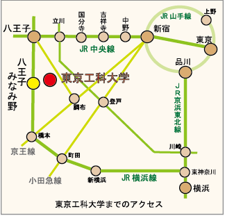

会場の東京工科大学までのアクセスです。
※ 駐車場はございませんので、お車でのご来場は控え、公共交通機関をご利用いただくようお願いします。
各種公共交通機関をご利用の方

電車でご来場の場合
JR横浜線「八王子みなみ野駅」下車
無料スクールバスにて約5分
バスでご来場の場合
JR八王子駅北口より
神奈川中央交通
八74系統 橋本駅北口行き
「御殿峠」下車、徒歩5分
JR橋本駅北口より
神奈川中央交通
八72系統 八王子駅行き または 橋70系統 片倉台行き
「御殿峠」下車、徒歩5分
タクシーでご来場の場合
行き先は八王子市・国道16号線沿いの「東京工科大学」
正門より入場
スクールバスをご利用の方
八王子みなみ野駅の西口を道のりに歩いて徒歩1分でバス停に到着
スクールバスにて約5分で大学に到着 (左下の地図を参照)
研究棟の下を経由してメディアホールへ (右下の地図を参照)